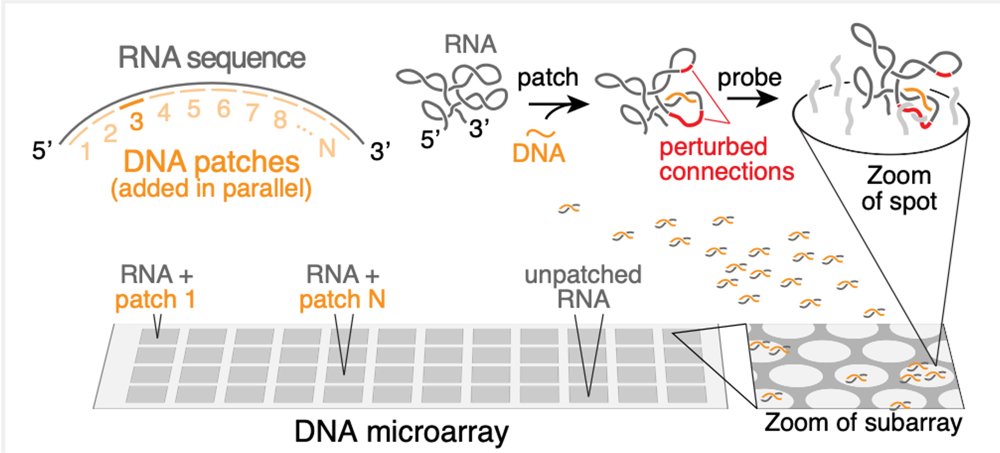

Probing RNA structure through inter-molecular binding
RNA molecules can be thought of as a string made up of beads, with four colors of beads (corresponding to the four nucleotides A, C, G, U). These beads typically interact with one another, which is what leads RNA molecules to bind one another, but also leads RNA molecules to fold up onto themselves, creating intricate structures. These structures in turn often affect the interaction of the RNA with other molecules. Experimentally determining the structure (or, as is more typical, structures) a given RNA molecule will fold into can be quite challenging. Oftentimes, identifying long-range contacts in the RNA is particularly tough.
In this paper, we devised a new method to experimentally determine the structures of long RNA molecules. This method relies on the observation that intramolecular structures determine intermolecular interactions. The method functions in several steps to determine the structure of a long RNA of interest (Fig. 1).
First, we measure how much the RNA binds to a set of DNA molecules that have been designed to interact strongly with the RNA in the absence of intramolecular RNA structure. Because the RNA does have structure, it typically interacts only weakly with the DNA molecules.
Second, we add a “patch” to the RNA, which is what we’ve called a short DNA molecule that we force to bind to the RNA at a certain position. (We force this binding by adding the DNA at a high concentration and at a high temperature, and then lowering the temperature only very slowly). Once the patch is bound, the RNA structure will change to accommodate it. Specifically, if the patch binds to a certain set of nucleotides, then if those nucleotides had been previously bound to a second set of nucleotides, that second set will now be free and not bound.
Therefore, the third step is to repeat the original first step, but now on the “patched” RNA. Mostly, we see the same results. But that second set of nucleotides will now show an increased propensity to interact with the DNA molecules. By repeating steps 2 & 3 for many patches, we can arrive at a complete map of the RNA structure (Fig. 2). We call step 2 the “patch” step, and step 3 the “probe” step, so that the full method is called “patch-probe”.
We validated the patch-probe technique on structure of an RNA virus that infects plants called STMV. The STMV structure had been analyzed by different experimental methods by other groups in the past, who have found somewhat different structures. Remarkably, the patch-probe method finds signatures of several of these structures (Fig. 3), suggesting that it could be used to probe not only the most likely structure into which a given RNA folds, but can display some properties of the ensemble of these structures.
We also show that our method is sensitive enough to detect the ways in which structure changes when pseudouridine is substituted in place of uridine (U). Pseudouridine is commonly used in RNA vaccines and forms stronger interactions with other nucleotides than uridine. We show that this can affect the structure of long RNA molecules in a way that can be measured by the patch-probe method.
The patch-probe method has a number of benefits. It is amenable to arbitrarily long RNA molecules, and finds arbitrarily long connections with ease, unlike current approaches. It also does not rely on any computational algorithm, which is a significant benefit since even our best computational RNA structure prediction algorithms are highly imperfect. Finally, it is extremely inexpensive to run compared to current approaches, and requires much less expertise, such that it can be more easily generalized.